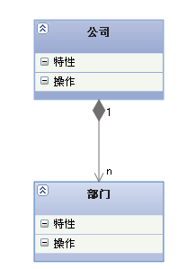
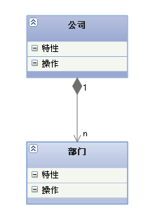

最重要的放最前面 #
UML类图几种关系的总结 #
在UML类图中，常见的有以下几种关系:
- 泛化（Generalization）：继承的关系，实线带三角形箭头，指向父类。
- 实现（Realization）：实现的关系，虚线带三角形箭头，指向接口。
- 关联（Association）：拥有的关系，实线带普通箭头，指向被拥有者。
- 聚合（Aggregation）：整体与部分的关系。实线带空心菱形，指向整体。
- 组合（Composition）：整体与部分的关系，但不能离开整体而单独存在。实线实心菱形，指向整体。
- 依赖（Dependency）：使用的关系，即一个类的实线需要另一个类的协助。虚线普通箭头，指向被使用者。
1.泛化(Generalization) #
【泛化关系】：是一种继承关系,它指定了子类如何特化父类的所有特征和行为。例如：老虎是动物的一种。
【箭头指向】：带三角箭头的实线，箭头指向父类。


2.实现（Realization) #
【实现关系】：是一种类与接口的关系，表示类是接口所有特征和行为的实现。
【箭头指向】：带三角箭头的虚线，箭头指向接口。


3.关联（Association） #
【关联关系】：是一种拥有的关系,它使一个类知道另一个类的属性和方法；如：老师与学生，丈夫与妻子。关联可以是双向的，也可以是单向的。双向的关联可以有两个箭头或者没有箭头，单向的关联有一个箭头。
【代码体现】：成员变量
【箭头及指向】：带普通箭头的实心线，指向被拥有者。

上图中，老师与学生是双向关联，老师有多名学生，学生也可能有多名老师。但学生与某课程间的关系为单向关联，一名学生可能要上多门课程，课程是个抽象的东西他不拥有学生。


上图为自身关联。
4.聚合（Aggregation） #
【聚合关系】：是整体与部分的关系。如车和轮胎是整体和部分的关系。聚合关系是关联关系的一种，是强的关联关系；关联和聚合在语法上无法区分，必须考察具体的逻辑关系。
【代码体现】：成员变量
【箭头及指向】：带空心菱形的实心线，菱形指向整体。


5.组合(Composition) #
【组合关系】：是整体与部分的关系。没有公司就不存在部门，组合关系是关联关系的一种，是比聚合关系还要强的关系，它要求普通的聚合关系中代表整体的对象负责代表部分的对象的生命周期。
【代码体现】：成员变量
【箭头及指向】：带实心菱形的实线，菱形指向整体。
 

6.依赖(Dependency) #
【依赖关系】：是一种使用的关系,所以要尽量不使用双向的互相依赖。
【代码表现】：局部变量、方法的参数或者对静态方法的调用。
【箭头及指向】：带箭头的虚线，指向被使用者。


总结 #
各种关系的强弱顺序：
泛化= 实现> 组合> 聚合> 关联> 依赖
下面这张UML图，比较形象地展示了各种类图关系：

startUML #
一:什么是UML #
UML是Unified Model Language的缩写，中文是统一建模语言，是由一整套图表组成的标准化建模语言
二:为什么要用UML #
通过使用UML使得在软件开发之前， 对整个软件设计有更好的可读性，可理解性，从而降低开发风险。同时，也能方便各个开发人员之间的交流。
UML提供了极富表达能力的建模语言，可以让软件开发过程中的不同人员分别得到自己感兴趣的信息
三:UML图有哪些？ #
- UML图分为结构图和行为图。
- 结构图分为类图、轮廓图、组件图、组合结构图、对象图、部署图、包图。
- 行为图又分活动图、用例图、状态机图和交互图。
- 交互图又分为序列图、时序图、通讯图、交互概览图。

UML图概览

四:UML九种图汇总 #

类图 #
概述 #
类图（Class Diagram）是面向对象系统建模中最常用和最重要的图，是定义其它图的基础。
类图主要是用来显示系统中的类、接口以及它们之间的静态结构和关系的一种静态模型。
类图不仅用于可视化描述和记录系统的不同方面，也为构建可执行代码的软件应用程序。
类图描述一类的属性和操作，也对系统的约束。被广泛应用于类图的建模的面向对象的系统中，因为它们是唯一的，可以直接映射到面向对象语言的 UML 图。
类图显示集合的类，接口，关联，协作和约束，它也被称为作为结构图。
目的 #
-
分析和设计应用程序的静态视图;
-
描述一个系统的责任;
-
基地组件图和部署图;
-
正向和逆向工程。
示例 #

车的类图结构为<>，表示车是一个抽象类； 它有两个继承类：小汽车和自行车；它们之间的关系为实现关系，使用带空心箭头的虚线表示； 小汽车为与SUV之间也是继承关系，它们之间的关系为泛化关系，使用带空心箭头的实线表示； 小汽车与发动机之间是组合关系，使用带实心箭头的实线表示； 学生与班级之间是聚合关系，使用带空心箭头的实线表示； 学生与身份证之间为关联关系，使用一根实线表示； 学生上学需要用到自行车，与自行车是一种依赖关系，使用带箭头的虚线表示；
对象图 #
概述 #
UML 对象图和类图一样反映系统的静态过程，但它是从实际的或原型化的情景来表达的。
UML 对象图显示某时刻对象和对象之间的关系。一个UML对象图可看成一个类图的特殊用例，实例和类可在其中显示。
UML 对象图是类图的实例，几乎使用与类图完全相同的标识。
由于对象存在生命周期，因此UML对象图只能在系统某一时间段存在。
目的 #
-
对象图的目的与类图类似。
-
不同的是，一个类图代表一个抽象的模型，包括类和它们之间的关系。但是，由于对象存在生命周期，因此UML对象图只能在系统某一时间段存在。这意味着对象图是更接近实际的系统行为。目的是在一个特定的时刻捕捉到静态的系统视图。
-
对象图的目的概述如下：
-
正向和逆向工程；
-
一个系统的对象间的关系；
-
一个交互的静态视图；
-
了解对象的行为和他们的关系从实用的角度来看。
示例 #

上面的对象图代表订单管理系统，顾客在一个特定的时间下单。它具有顾客、订单、特殊订单和一般订单四个对象。现在客户对象（C）是与三个订单对象（O1，O2和O3）。这些订单对象相关联的特殊订单和一般订单对象（S1，S2和N1）。顾客具有以下三个具有不同数目的订单（12，32和40），用于所考虑的特定的时间。
组件图 #
概述 #
UML 组件图（Component Diagram）又称为构件图，他描述的是在软件系统中遵从并实现一组接口的物理的、可替换的软件模块。 组件图 = 构件（Component）+接口（Interface）+关系（Relationship）+端口（Port）+连接器（Connector）。 UML 组件图给提供了将要建立的系统的高层次的架构视图，这将帮助开发者开始建立实现的路标，并决定关于任务分配及（或）增进需求技能
目的 #
组件图是一种特殊的 UML 图。与我们之前讨论的 UML 图表的目的都不同。组件图不描述该系统的功能，但它描述了使用这些功能的组件。 所以从这一点来说，组件图用于可视化在一个系统中的物理组件。这些组件包括库，程序包，文件等。 组件图也被描述为一个静态的实施的系统视图，在一个特定的时刻，静态执行代表组织的组成部分。 一个单一的组件图不能代表整个系统，但图的集合可用来代表整个。
- 组件图的目的概括如下：
- 可视化系统的组成部分。
- 构建的可执行文件，使用正向和反向工程。
- 描述的组织和组件的关系。
示例 #

在购买一件商品时，我们首先是浏览商品，了解商品详情。在商品详细页面上，我们可以看到一个“加入购物车”。可以绘制网上商城组件图，如上图所示：购物车、订单、库存、支付管理组件。
部署图 #
概述 #
部署图由节点以及节点之间的关系组成。 部署图描述的是系统运行时的结构，展示了硬件的配置及其软件如何部署到网络结构中。 部署图通常用来帮助理解分布式系统，一个系统模型只有一个部署图。 部署图用于可视化的软件组件部署的系统中的物理组件的拓扑结构。 部署图是用来描述一个系统的静态部署视图。
目的 #
部署图与组件图密切相关，部署图是用来描述软件组件部署的硬件组件；而组件图是用来描述组件和显示了它们是如何在硬件中部署。 UML的设计主要是把重点放在系统的软件构件。但是，这两个图是使用特殊图表专注于软件组件和硬件组件。 所以大多数的 UML 图是用来处理逻辑组件，但把重点放在系统的硬件拓扑部署图。
- 以下是部署图的目的描述：
- 可视化系统的硬件拓扑。
- 描述用于部署软件组件的硬件组件。
- 描述运行时处理节点。
示例 #

用例图 #
概述 #
用例图捕捉了模拟系统中的动态行为，并且描述了用户、需求以及系统功能单元之间的关系。 用例图展示了一个外部用户能够观察到的系统功能模型图。 用例图由主角，用例和它们之间的关系组成。
目的 #
用例图的目的是捕捉到一个系统的动态方面。 用例图是用来收集系统的要求，包括内部和外部的影响。这些要求大多是设计要求。所以，分析一个系统时要收集其功能用例和确定参与者。
- 简单来说，用例图的目的如下：
- 用例图用来收集系统的要求。
- 用例图用于获取系统的外观图。
- 用例图识别外部和内部因素影响系统。
- 用例图显示要求之间的相互作用是参与者。
示例 #

序列图 #
概述 #
序列图亦称为时序图或循序图或顺序图，是一种UML行为图。它通过描写叙述对象之间发送消息的时间顺序，显示多个对象之间的动态协作。它能够表示用例的行为顺序，当运行一个用例行为时，时序图中的每条消息响应了一个类操作或状态机中引起转换的触发事件。 序列图展示对象之间的交互，这些交互是指在场景或用例的时间流中发生的，序列图属于动态建模。 序列图的重点在消息序列上，也就是说，描写叙述消息是怎样在对象间发送和接收的，表示对象之间传送消息的时间顺序。 序列图的组成元素：对象、生命线、激活、消息。
目的 #
- 细化用例的表达。将用例所描述的需求与功能转化为更加正式、层次更加分明的细化表达。
- 有效地描述类职责的分配方式。根据顺序图中各对象之间的交互关系和发送的消息，来进一步明确对象所属类的职责。
- 丰富系统的使用语境的逻辑表达。系统的使用语境即为系统可能的使用方式和使用环境。
示例 #
ATM机取款的需求描述如下： 用户通过ATM机，插入银行卡。系统提示输入密码，用户输入密码。系统检查密码是否正确，密码正确用户选择取款。系统提示输入取款金额。用户输入金额，系统判断其合法性。在获取用户输入金额后，系统开始事物处理，减少账户金额，输出相应现金。序列图如下图所示：

协作图 #
概述 #
协作图是动态图的另一种表现形式，强调参加交互的各对象结构的信息。协作图是一种类图，包含类元角色和关联角色，而不仅仅是类元和关联。协作图强调参加交互的各对象的组织。 序列图的组成元素：对象、链接、消息。
目的 #
协作图中对象之间的消息传递来反映具体的使用语境的逻辑表达，表示的是系统的一个行为，消息编号对应了程序中嵌套调用的结构和信号传递过程，显示的对象之间的一种关系。 协作图常用于过程的详细设计。
示例 #
ATM机取现金100元的需求，协作图如下图所示：

状态图 #
概述 #
UML状态图是图表本身的名称，主要用于描述对象具有的各种状态、状态之间的转换过程以及触发状态转换的各种事件和条件。 UML状态图描述了一个状态机，可以被定义为一台机器，它定义了一个对象，这些状态控制外部或内部事件的不同状态。 状态机由状态、转换、事件、活动和动作五部分组成。
- 状态：状态指的是对象在其生命周期中的一种状况，处于某个特定状态中的对象必然会满足某些条件、执行某些动作或者是等待某些事件。一个状态的生命周期是一个有限的时间阶段。
- 转换：转换指的是两个不同状态之间的一种关系，表明对象在第一个状态中执行一定的动作，并且在满足某个特定条件下由某个事件触发进入第二个状态。
- 事件：事件指的是发生在时间和空间上的对状态机来讲有意义的那些事情。事件通常会引起状态的变迁，促使状态机从一种状态切换到另一种状态，如信号、对象额度创建和销毁等。
- 活动：活动指的是状态机中进行的非原子操作。
- 动作：动作指的是状态机中可以执行的哪些原子操作。所谓原子操作，指的是他们在运行的过程中不能被其他消息中断，必须一直执行下去，以至最终导致状态的变更或者返回一个值。
目的 #
UML状态图可以捕获对象、子系统和系统的生命周期，可以告知一个对象可以拥有的状态，并且事件(如消息的接收，时间的流逝、错误、条件为真等)会怎样随着时间的推移来影响这些状态。一个状态图应该连接到所有具有清晰的可标志状态和复杂行为的类；该图可以确定类的行为以及该行为如何根据当前的状态而变化，也可以展示哪些事件将会改变类的对象的状态。状态图主要是为了模拟响应系统。 以下是使用状态图的主要目的：
- 为了模拟系统的动态环节。
- 反应系统模型生命周期。
- 一个对象来描述不同的状态，在其生命周期的时间。
- 定义一个状态机模型状态的对象。
示例 #

活动图 #
概述 #
UML活动图是 UML 的动态模型的一种图形，一般用来描述相关用例图。 UML活动图描述满足用例要求所要进行的活动以及活动间的约束关系，有利于识别并行活动。 UML活动图是一种特殊的状态图，它对于系统的功能建模特别重要，强调对象间的控制流程。 UML活动图是一种表述过程基理、业务过程以及工作流的技术。它可以用来对业务过程、工作流建模，也可以对用例实现甚至是程序实现来建模。 UML活动图基本上是代表流程形成一个活动到另一个活动的流程图。活动可以被描述为一个系统的操作。
目的 #
UML活动图能够捕捉到该系统的动态行为，UML中其它的四个图是用来显示从一个对象到另一个消息流，但活动图是用来显示消息流从一个活动到另一个活动图。 活动图不仅用于可视化系统的动态性质，也可用于通过使用正向和逆向工程技术来构建可执行的系统。唯一缺少的东西在活动图的消息部分。 它并不显示任何消息流程从一个活动到另一个，活动图是一段时间视为流程图。虽然图中看起来像一个流程图，但事实并非如此。它显示不同的流程，如并行，分支，并发单。 以下是 UML 活动图目的描述：
- 绘制活动流程系统。
- 描述的顺序从一个活动到另一个。
- 描述系统并行，分支，并发流。
示例 #